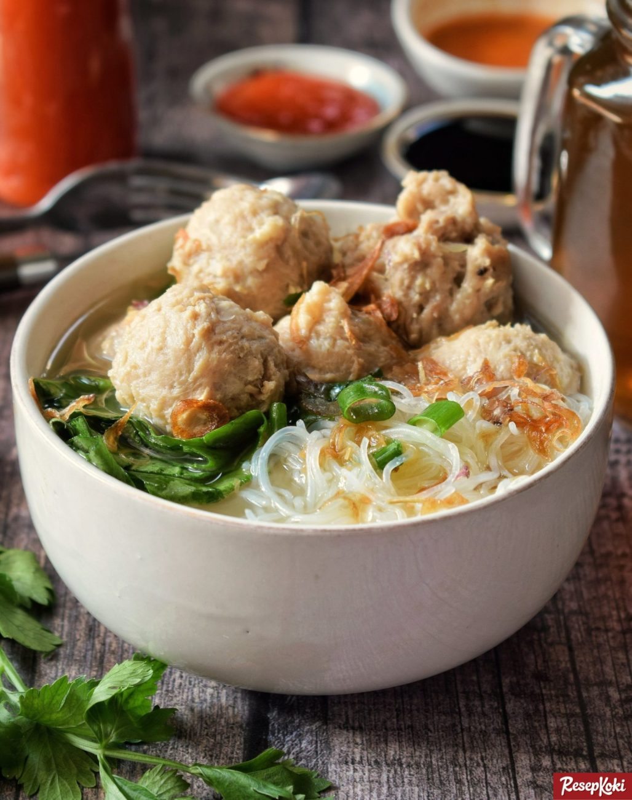

Home
Bakso Recipe
Bakso Recipe

Description
Bakso is a manifestation of Indonesia’s cultural diversity. It often reflects the unique identity of each place/region.
There are hundreds of bakso variants, and cities like Solo, Wonogiri and Malang have emerged as bakso icons.
Ingredients
For the broth
- 500 gr a mix of beef bones and trimmings
- 7 cloves garlic, peeled
- 1 tbsp white peppercorn
- 3 lt water
- 1 cube beef stock or ¼ tsp MSG
- 16 pcs ready to cook (frozen) meatballs
- Salt to taste
- 3 tbsp cooking oil
For the garnish
- 1 bowl of cellophane noodles/yellow noodles/rice vermicelli, or a mix of them.
- Few stalks bok choy, washed, chopped, and blanched.
- 1 stalk celery, thinly chopped.
- 1 stalk spring onion, thinly chopped.
- Sambal sop/soto to taste.
- Fried shallots (optional) to taste.
- Vinegar or lime wedges to taste (optional)
- Tomato ketchup to taste (optional)
- Sweet soy sauce to taste (optional)
Intructions
- Wash the beef thoroughly, and bring to boil with 3 lt of water. Once the soup is boiling, reduce the heat to medium low.
Discard any scum from the soup.
-
Meanwhile, crush the garlic and peppercorns into a paste.
-
Heat the cooking oil over medium flame, and saute the garlic paste until fragrant (around two minutes).
-
Add the sauteed garlic to the soup.
-
Add salt and the beef cube/MSG.
-
Continue cooking soup for 1.5 hrs to 2 hrs.
-
10 minutes before the soup is done, add the beef balls and cook until done.
-
Turn off the heat.